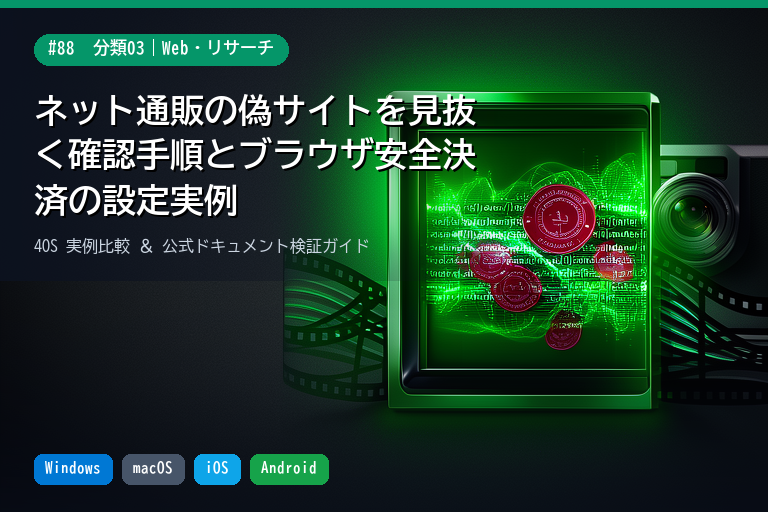

#88｜分類03: 情報収集・リサーチ・Web利用 2026-11-26

ネット通販の偽サイトを見抜く確認手順とブラウザ安全決済の設定実例｜Windows・macOS・iOS・Android
「ネットで欲しい商品を探していたら、すごく安い広告が出てきた」「公式サイトとそっくりなサイトを見つけたけれど、本当に大丈夫かな？」
ネットショッピングの普及に伴い、巧妙に偽装されたフィッシング詐欺サイトや偽通販サイトが増加しています。これらを見分けるためには、単に「URLが正しいか」をチェックするだけでなく、ブラウザが提供するセキュリティ機能（SSL/TLSプロトコル）を正しく理解し、活用することが不可欠です。
この記事では、Windows、macOS、iOS、Androidの4つの主要OSにおいて、偽サイトを見抜くための具体的な確認手順と、証拠を残すためのスクリーンショット撮影方法を徹底解説します。
4OS比較早見表
| OS | 推奨ブラウザ | SSL確認の主な操作 | スクリーンショットの基本操作 | 特徴・制限事項 |
|---|---|---|---|---|
| Windows | Microsoft Edge | 鍵アイコンから証明書詳細を確認 | Win + Shift + S |
証明書の詳細な検証が可能。Snipping Toolで証拠保全。 |
| macOS | Safari | 鍵アイコンからサイト情報を確認 | Cmd + Shift + 5 |
直感的なUI。標準機能での自動ブロックが強力。 |
| iOS | Safari | 鍵アイコンの表示を確認 | サイドボタン + 音量アップ | セキュリティ強化のため、詳細情報の閲覧に制限あり。 |
| Android | Chrome | 鍵アイコンから安全性を確認 | サイドボタン + 音量ダウン | UIが簡略化されており、技術的な検証は限定的。 |
1. Windows 11 での実例手順
Windows環境では、Microsoft Edgeを活用して詳細な証明書情報を確認することが可能です。
【実例手順】公式機能を用いた確認・記録方法
- SSL/HTTPS の視覚的チェック: アドレスバーの鍵アイコン（🔒）をクリックし、「このサイトの接続は安全です」と表示されているか確認します。
- 注意: 警告が出ている場合は「詳細」ボタン→「証明書エラーの詳細を表示」で具体理由を確認してください。
- 証明書の発行元確認: 「セキュリティ情報」タブから CA（認証局）が信頼できる機関であるか確認します（例：DigiCert, GlobalSign など）。個人名義の証明書や、身に覚えのない発行元は危険信号です。
- スクリーンショットによる証拠保全 (Snipping Tool 使用):
Win + Shift + Sキーを押し、アドレスバーと警告メッセージのみを選択してキャプチャします。- 「スナップイン」→「フォトエディタ（または Clipchamp）」で保存し、URL と日時を確認した記録を残しましょう。
【標準機能の制限事項】
- 自動ブロック機能: Windows 11 の Edge はフィッシングサイトへのアクセスを自動的に遮断しますが、すべての偽サイトを網羅しているわけではないため手動確認が必要です。
- 証明書詳細画面のカスタマイズ不可: ユーザー側で証明書の表示形式や警告の厳格さを標準設定から変更することはできません（ブラウザ拡張機能以外では不可能）。
【よくあるトラブルと解決法】3 選
- 「このサイトは安全です」と出ているが怪しい場合
- 原因: 偽証明書を取得した業者が存在するため、CA の信頼性だけで安心できるわけではありません。
- 対策: 「セキュリティ情報」で発行元が公的認証局か確認し、URL を公式ページと一字一句比較してください。
- Snipping Tool で画面が切り取れない場合
- 原因: 一部のブラウザでは Web サイトのコンテンツ自体はキャプチャ可能ですが、外部ツールとの連携で失敗することがあります。
- 対策: 「Win + Shift + S」ではなく「Print Screen キー」を押してクリップボードに貼り付け、「フォトエディタ」から保存する代替手段を試してください。
- 証明書エラーの詳細が日本語化されていない場合
- 原因: 英語圏の CA が発行した証明書の詳細は英語表記になることがあります。
- 対策: ブラウザ言語設定を「English (United States)」に変更して再読み込みし、エラーコード（例：ERR_CERT_AUTHORITY_INVALID）を確認してください。
2. macOS での実例手順
macOSではSafariの洗練されたUIを通じて、迅速に安全性を確認できます。
【実例手順】公式機能を用いた確認・記録方法
- SSL/HTTPS の視覚的チェック: アドレスバーの鍵アイコンをクリックし、「安全」または「警告」を表示するか確認します。
- 注意: 「セキュリティとプライバシー」設定で「証明書を自動的に管理する」がオンになっているか確認してください（デフォルトはオン）。
- 証明書の詳細表示: 鍵アイコン→「サイト情報」→「証明書」タブから有効期限や発行元を確認。「このサイトの接続を信頼できません」と出たら即座に離脱しましょう。
- スクリーンショットによる証拠保全:
- macOS Ventura/Sequoia:
Cmd + Shift + 5で範囲選択し、「保存」→「フォトエディタ（または画像アプリ）」で保存します。 - macOS Monterey以前：
Cmd + Shift + 4を押し、ドラッグして領域を指定後 Enter キーを押します。
- macOS Ventura/Sequoia:
【標準機能の制限事項】
- 自動ブロックの詳細表示: Safari はフィッシングサイトを自動的に遮断しますが、「なぜブロックされたか」の詳細な理由（どのドメインリストに該当したか）を表示しないことが多いです。
- スクリーンショットの保存場所固定不可: 公式ショートカットでは「デスクトップ」等への直接指定ができないため、必ず一旦画像アプリを経由する必要があります。
【よくあるトラブルと解決法】3 選
- 「サイト情報」メニューが反応しない場合
- 原因: ブラウザのキャッシュや拡張機能（AdBlock など）の影響で UI が固まっていることがあります。
- 対策: Safari メニュー→「表示」→「開発」としてデベロッパーツールを開き、コンソールエラーを確認するか、Safari を再起動してください。
- スクリーンショットが暗転している場合
- 原因: 偽サイトや警告画面の背景色が黒く設定されていると、保存した画像も真っ黒に見えることがあります。
- 対策: 「システム環境設定」→「ディスプレイ」で「ダークモード」をオフにし、再キャプチャしてください。
- 証明書の有効期限が切れているのに警告が出ない場合
- 原因: システムの時刻・日付設定がズレていると、OS が証明書を正しく検証できないことがあります。
- 対策: 「システム環境設定」→「一般」で正しい日時を設定し、ブラウザを再起動してください。
3. iOS (iPhone / iPad) での実例手順
モバイル端末では、セキュリティ強化のため詳細情報の閲覧に一定の制限があります。
【実例手順】公式機能を用いた確認・記録方法
- SSL/HTTPS の視覚的チェック: アドレスバーの鍵アイコンが緑色で「安全」と表示されているか、または赤い警告マークが出ているか確認します。
- 注意: iOS では Safari 標準では証明書の詳細（発行元など）を直接開く UI が非公式仕様のため、「設定」→「Safari」→「プライバシーとセキュリティ」から追跡防止の設定を確認する程度が限界です。
- スクリーンショットによる証拠保全:
- iPhone (Face ID):
サイドボタン+音量アップを同時に押し、離す前に画面をタップして保存領域を選ぶ。 - iPad: 同様にサイドボタンと音量ボタンの組み合わせでキャプチャします。
- iPhone (Face ID):
【標準機能の制限事項】
- 証明書詳細の確認不可: iOS の Safari では、URL バーをクリックしても「サイト情報」のような詳細画面が開かず、「このサイトの接続は安全です」というメッセージのみが表示されます（Apple のセキュリティポリシーによる）。
- スクリーンショットのフルページ保存: 偽サイトを記録する場合は通常範囲ですが、長い警告ログをキャプチャしたい場合、設定で「フルページ」をオンにしておく必要があります。
【よくあるトラブルと解決法】3 選
- 「サイト情報」ボタンが灰色になっている場合
- 原因: iOS のバージョンアップに伴い、セキュリティ強化により詳細表示機能が制限されたことがあります。
- 対策: App Store で Safari を最新バージョンに更新してください。それでも不可なら、iPhone 標準の「メモ」アプリで手動入力するか、Mac と AirDrop で共有して確認する方法を推奨します。
- スクリーンショットが保存されない場合
- 原因: 「設定」→「コントロールセンター」などでショートカットキーが無効化されているか、画面録画モードと混同している可能性があります。
- 対策: 再度
サイドボタン+音量アップを押し、画面がフラッシュしたら即座にタップして保存する手順を再確認してください。
- 警告メッセージが消えてしまう場合
- 原因: サイトの自動リロード機能により、ページ遷移中に警告が表示されなくなることがあります。
- 対策: 一度「戻る」ボタンで前の画面に戻り、「共有」→「写真に保存」して画像として固定してください。
4. Android での実例手順
AndroidではChromeブラウザが標準となりますが、技術的な検証は簡略化されています。
【実例手順】公式機能を用いた確認・記録方法
- SSL/HTTPS の視覚的チェック: アドレスバーの鍵アイコン（🔒）をクリックし、「安全」または「警告」を表示するか確認します。
- 注意: Android 版 Chrome では、証明書エラーが出た場合の詳細表示は限定的なことがあります。「詳細情報」ボタンから CA を見られることがありますが、すべての情報を開くのは難しい場合があります。
- スクリーンショットによる証拠保全:
- Pixel / Galaxy など多くの機種:
サイドボタン+音量ダウンを同時に押し、画面の領域を選択して保存します。 - 注記: 機種によりショートカットが異なる場合があるため、「設定」→「システム」→「スクリーンショットと動画撮影」で確認を推奨します。
- Pixel / Galaxy など多くの機種:
【標準機能の制限事項】
- 証明書詳細のカスタマイズ不可: Android の Chrome は、証明書の発行元や有効期限を詳しく表示する UI が非常に簡略化されており、技術的な検証は困難な場合があります（ブラウザ拡張機能が使えないため）。
- スクリーンショットの保存場所固定不可: 機種によっては「ギャラリー」アプリではなく、「Google フォト」に自動アップロードされる設定になっていることがあります。
【よくあるトラブルと解決法】3 選
- 「詳細情報」ボタンが反応しない場合
- 原因: ブラウザキャッシュの破損や、OS のセキュリティアップデート未適用による不具合。
- 対策: Chrome メニュー→「設定」→「プライバシーと安全性」→「閲覧履歴データの削除」からキャッシュをクリアしてください。
- スクリーンショットが保存されない場合
- 原因: ストレージ容量の不足、または特定のアプリ（銀行系など）によるキャプチャ禁止設定。
- 対策: デバイスの空き容量を確認するか、Google 公式の「Google Lens」等を利用して画面上の情報を解析する代替手段を検討してください。
- URLが正しく表示されない場合
- 原因: 短縮URLサービスを経由している、またはブラウザの表示モード（デスクトップ表示など）の影響。
- 対策: ブラウザの設定から「モバイルサイト」を表示するように変更し、元のドメインを確認してください。
まとめ：快適なマルチOS環境を作るポイント
ネット通販における偽サイト対策は、「疑わしいと思ったらすぐに確認する」という習慣と、各デバイスの標準機能を使いこなす知識の組み合わせで解決します。
安全なネットショッピングをより快適にするためには、以下の周辺機器やツールの導入も検討してみるのがおすすめです。
- VPNサービス: 公共Wi-Fiなどでの通信を暗号化し、中間者攻撃による情報奪取を防ぎます。
- トラックボールマウス: WindowsやmacOSで精密な操作を行う際、手首の負担を軽減しながら快適にブラウジングが可能です。
- ブルーライトカット眼鏡: 長時間の調査やリサーチ作業において、目の疲れを抑えながら集中力を維持するのに役立ちます。
正しい知識と適切なツールを組み合わせることで、安全でストレスのないネットショッピング環境を構築しましょう。
参考文献・公式ドキュメント（一次情報ソース）
本記事の手順・仕様は以下の各OSおよびツールの公式ドキュメントに基づいています。OSアップデートによりメニュー名称や挙動が変わる場合があるため、最新仕様の確認にもご活用ください。
- [Windows] Snipping Tool を使ってスクリーンショットをキャプチャする・画面録画する - Microsoft サポート
- [macOS] Macでスクリーンショットを撮る - Apple サポート (日本)
- [macOS] Macで画面を収録する方法 - Apple サポート (日本)
- [iOS] iPhoneでスクリーンショットを撮る（フルページ保存を含む） - Apple サポート (日本)
- [iOS] iPhone、iPad、iPod touchで画面を録画する - Apple サポート (日本)
- [Android] Android デバイスで画面の画像（スクリーンショット）または動画を撮影する - Android ヘルプ